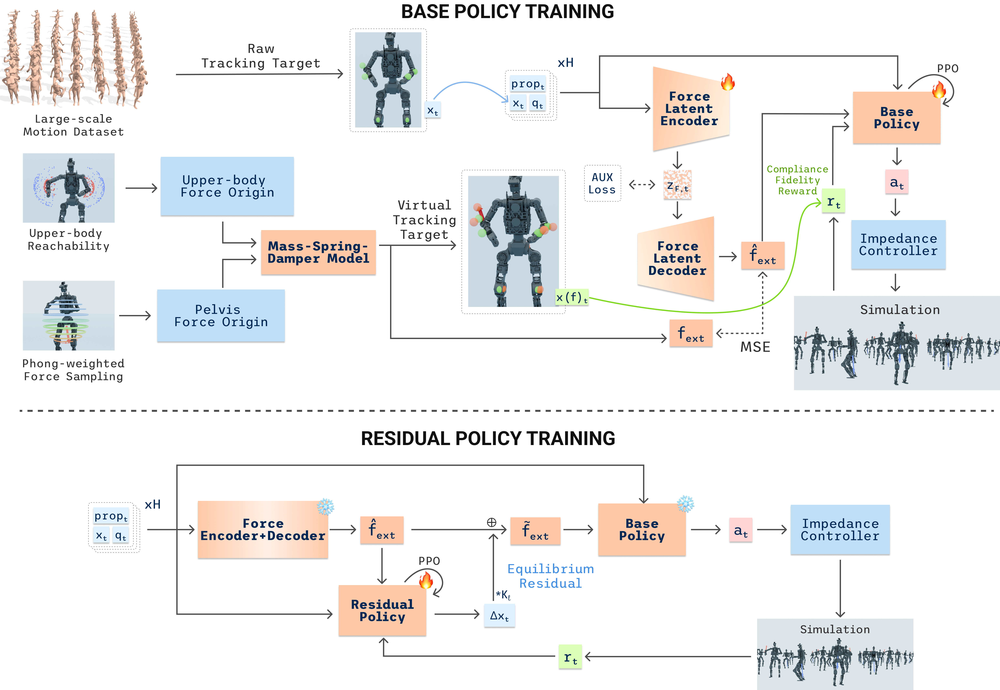

Push a 70 kg humanoid anywhere — hand, torso, pelvis, legs — and it yields to the force with its whole body instead of fighting back, while staying on its feet and carrying on with the task.
Abstract
Whole-body compliant control is essential for deploying heavy humanoids under high
payload in human-centric environments. Most prior force-aware learning-based pipelines
focus on end-effector resistance, per-link upper-body springs, or end-effector stiffness
modulation, leaving arbitrary-site perturbations on heavy platforms with lower-body
engagement largely unaddressed. We close this gap with CompliantWBC
comprising: (1) A base policy trained with RL to maximize
compliance-fidelity reward, guided by a multi-site whole-body impedance reference
controller, extending classical Cartesian impedance to any controlled link;
(2) A bounded residual policy that edits the per-link impedance equilibrium
over a frozen base, correcting the coarse but structured wrench estimate supplied by a
force encoder co-trained behind a gradient barrier; (3) A Phong-weighted
force-origin sampler with an axis-decoupled pelvis anchor induces
lower-body-inclusive compliance curriculum training via two interpretable parameters.
We evaluate CompliantWBC in simulation against both compliant and stiff baselines,
achieving best compliant fidelity of 2.58 cm deviation from analytical solutions,
and demonstrate it on a real heavy humanoid across static/dynamic force reaction, board
wiping, squat under payload, and cooperative payload transport.
Video
How It Works
The robot has no force sensors. It has to guess a push through its own joints, decide
how far to yield while staying balanced. We train that behaviour in
two stages in simulation then deploy it directly on hardware. Stage 1 teaches the robot to yield: pushes are randomized all
over the body, a small network guesses the push from proprioception, and the policy is
rewarded for landing in the exact place where an ideal compliant controller would be.
Stage 2 freezes all of that and trains a small, bounded residual
that fixes what the force estimation gets wrong.

An analytical controller for compliance
Classical control tells us exactly where each body part should end up when a force hits it — as if a spring were attached to it — while balance is kept. We use that only to assign reward the policy during training. It never runs on the robot, so none of its cost or fragility affect the policy inference.
A guess at the push, plus a small correction
With no force sensors, the robot infers the push from its own joint history. That guess points the right direction but has some bias to the amplitude. So a second, small network nudges where each spring is pulled to — by at most 5 cm. Because it moves a target rather than the motors, how hard the robot can push back stays bounded within the base policy's behavior.
Pushes everywhere, not just the hands
In training, forces come from all over the body — pelvis and legs included — biased downward, like weight being carried. That is what makes the robot squat, lean, and shift its weight, instead of only moving its arms the way upper-body-only methods do.
Results
Compliant vs Stiff Behavior
We compare against a stiff whole-body tracker
(TWIST2) and an upper-body-only compliant method
(Gentle Humanoid), and against ablated versions of our method.
The stiff tracker follows commands best when nothing is touching it, but it fights
every push and falls in 4 of 10 trials. Upper-body-only compliance survives, yet its
legs barely participate. Ours comes closest to how an ideal compliant controller would
react, leaves the most headroom in the motors, puts twice as much of the reaction
through the legs, and stays up in 98% of trials — for a small cost in free-space
tracking. Take away the pelvis pushes and the legs stop helping; take away the
correction and the give-way gets noticeably worse.
Controller
Ecmdfree ↓
Eimp ↓
ρτ ↓
RLB ↑
S ↑
tracking error, nothing touching itcm
distance from the ideal givecm
joints near their torque limit%
share of the reaction taken by the legs%
trials without a fall%
TWIST2 (stiff)
2.18±0.31
6.79±0.72
2.74±0.38
16±4
59
Gentle Humanoid (upper body)
5.22±0.47
3.92±0.35
2.12±0.29
14±3
91
Ours, without pelvis force sampling
4.12±0.38
4.22±0.21
1.87±0.24
16±3
93
Ours, without the correction
4.29±0.35
3.81±0.29
1.56±0.21
20±3
94
CompliantWBC (full)
4.65±0.41
2.58±0.24
0.93±0.15
31±4
98
We plot the leg reactions during a push on the pelvis. The compliant policy (yellow) stays well clear of the torque limit; the stiff tracker (blue) drives its legs into saturation — the resist-and-fall behaviour behind that 59% number.
Where the Effort Lands
We analyzed the same pelvis push across all twelve lower-body joints. Each row is one joint reaction in each 0.1s time window and the shade is how much of that joint's torque
limit is in use. The stiff tracker keeps every joint loaded and pins its left ankle
roll against the limit for a fifth of the run (red). Ours works at about half the
effort overall — 11% of the limit against 21% — leaves most joints nearly
idle, and puts what load is left into the knees, which have larger torque limits compared to ankles.
Force Prediction: Right Direction, Bias Amplitude
With no force sensors, the robot has to infer the push from its own joints. We
checked that guess against the truth over 242k samples, sorted by how hard the push
actually was.
The guess points the right way, and gets sharper the harder the push — 33°
off at a light touch, 19° under a heavy load. What it gets wrong is the size: it
over-estimates light pushes and under-estimates heavy ones. Right direction, wrong
distance — exactly the kind of error a small, bounded residual can absorb.
What the Residual Actually Fixes
To demonstrate the contribution of the residual policy, we swapped the policy's estimation for the simulator's true push —
something it can never have on hardware — and turned the residual policy on and off
in each case. If the residual policy is really fixing the estimation, it should only help when
the estimation is being used.
What the robot is given
‖f−f̂‖
Eimp ↓
ρτ ↓
‖Δx‖
S ↑
how wrong the guess isN
distance from the ideal givecm
joints near their torque limit%
how far the correction movescm
trials without a fall%
A — estimated F, no correction
10.1±2.1
3.81±0.29
1.56±0.21
–
94
B — ground-truth F, no correction
0
2.44±0.22
1.02±0.17
–
97
C — ground-truth F, with correction
0
2.31±0.21
0.89±0.14
0.4
98
D — estimated F, with correction (ours)
10.1±2.1
2.58±0.24
0.93±0.15
2.1
98
The residual policy does serve as a compensation for the estimation error. The correction is worth 1.23 cm when the robot is working from its own
guess (A → D) but only 0.13 cm when it already has the truth
(B → C) — and with nothing left to fix it shrinks itself five-fold,
from 2.1 cm of movement down to 0.4. Handing the robot a perfect force reading
would have almost no benefit (2.44 vs. our 2.58 cm), so a rough guess is good enough
as long as something small is there to clean it up.
Force Latent Visualization
Each point is the policy's estimation of a moment of contact, coloured by where
the push actually landed. They separate into clean groups — left limb, right
limb, pelvis, several at once, and nothing at all. So during the training, the policy implicitly learned to distinguish the different perturbation classes, even though it was never told what they were.
Demos
Whole-body Compliance
Compliant vs. stiff
Ours moves its whole body out of the way; the stiff
policy resists until it is imbalance.
Ours (compliant)Stiff policy
One policy, many contact points
The same policy yields to external forces at the shoulder, the wrist, and the pelvis.
ShoulderWristPelvis
Evaluation on a real 70 kg Humanoid
We conducted five tasks, run by teleoperation on an in-house humanoid roughly twice the weight of
the G1 used in most prior work on compliant humanoids.
1VinRobotics2National University of Singapore3VinUniversity4TU Darmstadt
*Equal contribution†Equal advising
BibTeX
@inproceedings{compliantwbc2026,
title = {Whole-Body Compliance for Heavy Humanoids via Force Latent
Estimation and Residual Impedance Targets},
author = {Do, Tan-Dzung and Trinh, Cuc T. and Phuong, Tuan Dat and
Le, Chien and Ly, Thanh and Ngo, Vien Anh and Le, An Thai},
booktitle = {Under Review},
year = {2026}
}